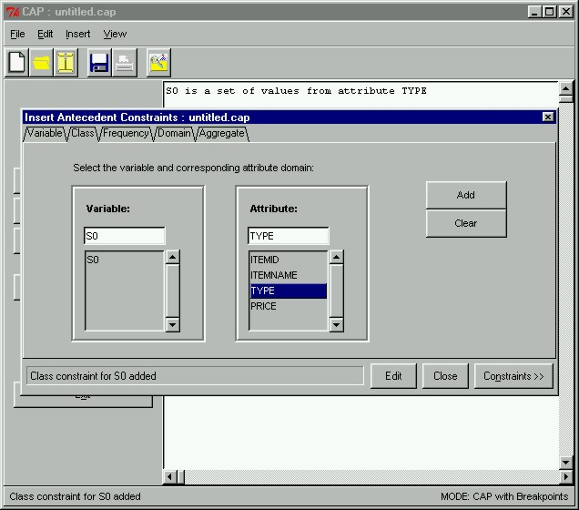

 |
Antecedent Class ConstraintNext we need to create a class constraint for the antecedent. The class constraint specifies the attribute whose domain the antecedent set ranges over. Since the store manager is only interested in those items which have been bought with snack and soda types, the domain of our antecedent set will come from the TYPE attribute. We can easily add this constraint in the prototype by specifying the correct values and clicking the Add button. The constraint will subsequently be displayed in the right hand side frame of the main window (which can be seen underneath our current dialog box).
|